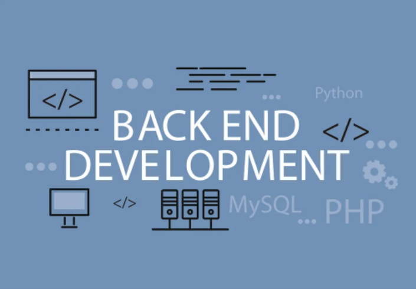

Back End Developer
Back-end developer memiliki tugas dan tanggung jawab dalam mengelola bagian server pada aplikasi atau website. Back-end developer bertugas untuk memastikan operasional internal situs web atau aplikasi berjalan dengan baik. Ia juga fokus pada pengaturan dan pemeliharaan database pengguna. Tanggung jawab lain adalah seperti memastikan seluruh fitur di situs web atau aplikasi dapat berfungsi dan baik serta tidak berjalan dengan lambat. Profesi ini bertanggung jawab mengenai pemeliharaan sistem pada situs dan aplikasi. Seorang back end developer harus memiliki keahlian dalam bahasa pemograman seperti PHP, Ruby, Pythonm dan Net. Mereka juga harus paham teknologi database seperti Oracle, Microsoft SQL Server, NodeJS, dan MySQL.
Sumber : https://tekno.kompas.com